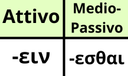

L'infinito in Greco Antico ha la stessa funzione di quello italiano, ossia esprimere un'azione in modo generale.
C'è da denotare una cosa. Nei dizionario, così come quello in questa app, il verbo si trova sempre alla prima persona singolare attiva del presente indicativo, come il latino. Perciò non cercare il verbo come visto sopra nella desinenza attiva della tabella. Anche se sembra logico farlo, non riusciresti a trovare nulla.
Memorizza bene le desinenze, sono poche e soprattutto più andrai avanti col percorso più infiniti troverai sulla strada, specialmente con le infinitive.